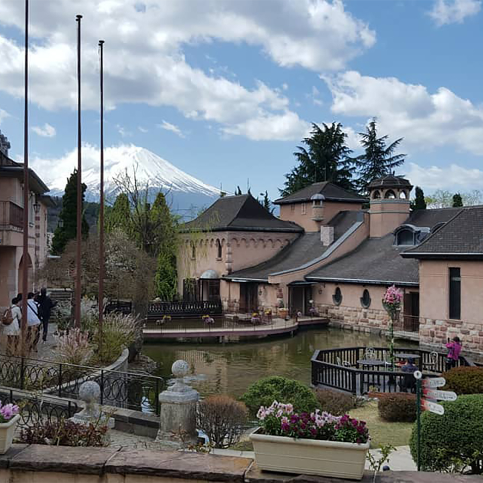
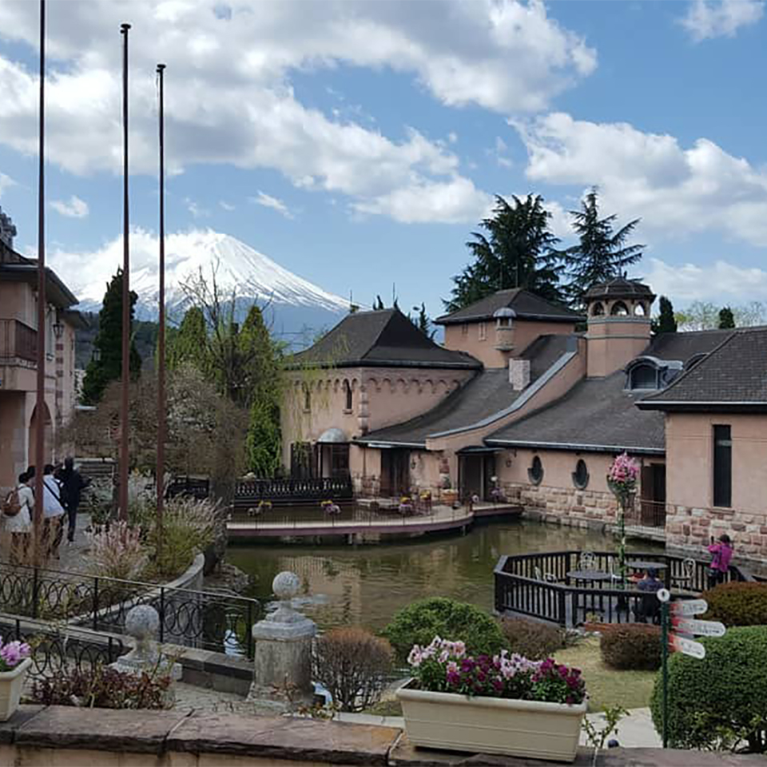

The arrival
Last year I traveled to Tokyo, Japan with my friend Valerie. I started my trip with a flight from St. Louis down to Phoenix to meet up with her. A brief overnight stay and a much needed stop at In-n-Out and we were on our way to Los Angeles in the morning. After a chaotic connecting flight there we buckled in for our 13 hour flight across the Pacific. Officially landing a day in the future, I was more than happy to say goodbye to the airport and take the 3-hour train ride from Narita into Tokyo city proper.
The first day
Our first official day there we started with a trip to Shinjuku Gyoen National Gardens to see the cherry blossoms in bloom. Spring is peak tourist season for Tokyo and the park was packed with tourists from around the world. To the dismay of my feet we went straight from the park to Meiji Jingu. It's an iconic Shinto shrine with towering arches and trees that have seen hundreds of years of history.
Mt. Fuji
The next day we left the Shinjuku district and headed out closer to the countryside of Kawaguchiko. What did this little town have to offer? Beautiful views of Mt. Fuji! We took a ropeway to the top of Mt. Kachi Kachi and a boat ride around the lake to take in the spectacular scenery. We rounded this leg of the trip up with a visit to the Kawaguchiko Music Music Forest Museum and a reenacted traditional Japanese village.
 

Studio Ghibli Museum
Sad to leave nature but not our tragic hotel room behind, our next stop was Kichijoji. Kichijoji is home to the famous Studio Ghibli Museum. Studio Ghibli is basically the Disney animation equivalent of Japan. I grew up with their movies like Howl's Moving Castle and Kiki's Delivery service that will always hold a special place in my memories. I had my favorite food experience of my trip here at a little izakaya (a small Japanese bar) called Bakawarai Junsui. The best phrase for small places like this without English menus is 'osusume wa nan desu ka' or 'what would you recommend?' I tried sea urchin, Kobe beef, and a highball (okay, a few) for the first time that night. Our last day in Kichijoji was a split between time at the local zoo (with a guinea pig petting area!) and the Pokemon Cafe.
Back to the city center!
The last week of our trip had come and with it another change of districts. We headed back Shibuya to stay in one hotel (finally!) for the final week. We hit up the Pokemon Center in Ikebukuro were I spent entirely too much money and followed that up with the charming Sunshine City Aquarium. Have you ever wanted to see a penguin shower on a rooftop overlooking a city? This is the place! The next few days were spent at various shopping centers (Harajuku, Akibahara, Shibuya, Shinjuku) and themed cafes. Themed cafes don't always offer food contrary to their name. For example, we visited both a bunny and owl cafe were we got to pet and pose for pictures with the lovely animals.
The final leg
Our final stop in Tokyo was to the Tokyo Metro observation deck to see the city in all of it's glory. It's located atop the Tokyo Meotropolitan building and offers 360 deggree views. It was a great place for photos and to see some of the work that Japan is putting in for the 2020 Tokyo Olympics. We spent our last night in Narita as it was closer to airport and headed home from there. I loved this trip and I would recommend Tokyo to anyone who loves good food and busy cities intertwined with ancient shrines. My hope is to return to Japan in 2021 to visit Osaka and Kyoto.